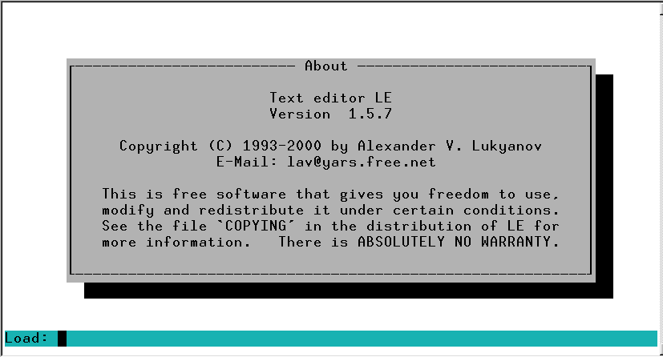
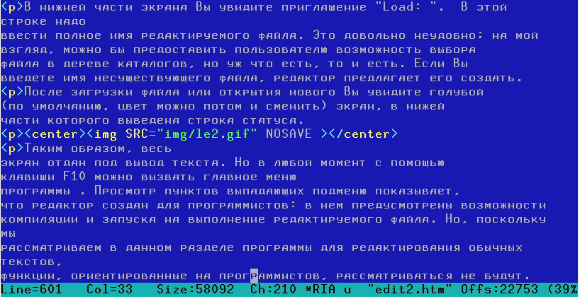
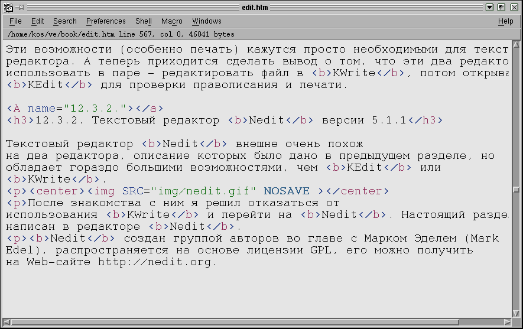
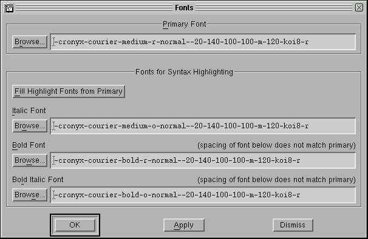
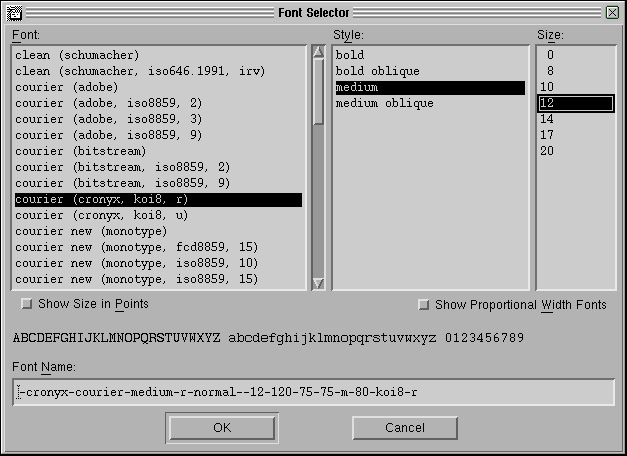
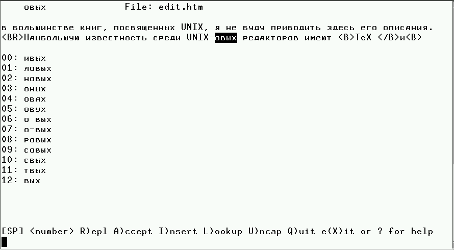

12.1. Типы редакторов
Редактирование текстовых файлов (либо файлов с
текстом на естественном языке, либо файлов с исходными текстами программ) - одна
из наиболее часто выполняемых работ на любом компьютере и в любой операционной
системе. Может быть поэтому текстовых редакторов для Линукс разработано уже
великое множество (на www.linuxlinks.com перечислены около 100 наименований, и
это еще, вероятно, не все). Так что выбрать есть из чего. И выбору наиболее
удобного редактора стоит уделить некоторое время, памятуя русскую пословицу "О
мастере судят по тому, в каком состоянии у него инструмент".
Для начала нужно сказать, что текстовые файлы стоит разделить на два типа.
Первый - это простые ASCII-файлы, использующие код ASCII для представления
символов. К этому же классу отнесем и те файлы, которые содержат специальные
служебные символы или последовательности символов кода ASCII, используемые для
форматирования текста при выводе на экран и принтер. Но существенно то, что эти
форматирующие последовательности (почти) не мешают Вам прочитать текст,
содержащийся в файле с помощью любого простейшего средства просмотра или
простейшего текстового редактора. Примерами таких файлов могут служить файлы,
создаваемые редакторами типа встроенного редактора программы Midnight Commander,
файлы в формате html, файлы, создаваемые программой notepad в Windows и vi в
UNIX.
Второй тип - это файлы, использующие собственный формат для представления
текста (в которых символы текста представлены специальными
последовательностями). Текст в таких файлах невозможно прочитать без той
программы, в которой файл создавался, или специального вьюера. Примеры: файлы в
форматах Word или rtf в Windows, файлы StarWriter или WordPerfect для Linux,
файлы в формате Unicode.
Иногда трудно с первого взгляда отнести файл к первому или второму типу.
Например, файлы формата Post Script надо бы отнести к первому типу, поскольку
весь читаемый текст там представлен в кодах ASCII, однако в этих файлах так
много форматирующие вставок, что текст там найти можно только с большим трудом,
так что я бы скорее отнес их ко второму классу.
В соответствии с этой классификацией файлов и текстовые редакторы делятся на
2 класса в зависимости от того, в каком формате они сохраняют создаваемые файлы:
в формате ASCII или в собственном формате.
Кроме того, редакторы можно разделить по признаку того, на работу в каком
режиме (текстовом или графическом) они ориентированы. Редакторы для графического
режима обычно обеспечивают режим WYSIWYG ("Что видим на экране, то получим при
печати"). Некоторые редакторы для текстового режима тоже позволяют получить
красиво оформленные документы, но на экране заранее увидеть результат будущей
печати, естественно, не позволяют.
Таким образом, все редакторы разбиваются на 4 класса, соответствующие четырем
клеткам следующей таблицы.
|
Редакторы для текстового режима |
Редакторы для графического режима |
| ASCII-файлы |
vi, vim, bvi, Nvi, Elvis, Levee, vile, Wily, joe, aee, Fred, gred,
le, lpe, Zed, TeX, Emacs, встроенный редактор программы Midnight
Commander, |
Текстовые редакторы Kedit и KWrite из пакета KDE, редактор
AbiWord, |
| Собственный формат файла |
|
Текстовые процессоры (редакторы) из пакетов StarOffice, Applixware,
KOffice, отдельные текстовые процессоры Maxwell и WordPerfect 8, Adobe
Acrobat. |
В этой таблице просто в качестве примеров приведены названия некоторых
текстовых редакторов каждого типа, пригодных для использования в Линукс.
Из всего множества различных текстовых редакторов рядовой пользователь обычно
выбирает для себя два-три редактора, с которыми он постоянно работает. Человек
просто-напросто заучивает до автоматизма управляющие комбинации клавиш,
привыкает определенным образом, через пункты меню или щелчки мышкой, выполнять
стандартные операции редактирования и вообще приноравливается к среде редактора.
Поэтому для перехода от использования одного редактора к применению другого
должны быть достаточно веские причины. Больше одного редактора используется
только потому, что нужен один редактор для текстового режима, с помощью которого
редактируются ASCII-файлы (может быть и из графического режима через окно
терминала), второй - редактор, обеспечивающий сложное форматирование, для
создания красиво оформленных документов, распечатываемых на бумаге (обычно это
редактор, работающий в графическом режиме).
По моему, рядовому пользователю, часто использующему компьютер для
редактирования файлов, необходимо освоить по крайней мере 3 редактора. Один из
них - это мощный текстовый процессор, работающий в режиме WYSIWYG,
обеспечивающий широкие возможности форматирования текста и массу дополнительных
возможностей, отсутствующих в более простых редакторах.
Второй необходимый редактор - это редактор для создания или правки файлов
формата ASCII, работающий в графическом режиме. С помощью этого редактора
Web-мастер может, например, редактировать html-странички, в нем можно написать
письмо для последующей отправки по e-mail и т.д. Это должен быть редактор
графического режима, потому что во многих случаях в графическом режиме работать
легче и удобнее, чем в текстовом.
И все же надо уметь пользоваться и одним из консольных текстовых редакторов,
потому что Вы, как единственный пользователь (и даже суперпользователь)
персонального компьютера, должны уметь отредактировать конфигурационные файлы,
причем в любой ситуации, даже тогда, когда графический режим не загружается.
Исходя из этих рассуждений нижеследующее изложение разбито на три больших
части, каждая из которых посвящена одному из выделенных типов редакторов. Раздел
с описанием каждого рассматриваемого ниже редактора создан в том самом
редакторе, который в этом разделе описан. Я надеюсь, что после чтения этих
разделов Вы сможете определиться с выбором текстовых редакторов. Конечно,
критерии выбора могут у каждого оказаться свои. Но думаю, что для нас,
русскоязычных пользователей, немаловажным фактором является то, что редактор
позволяет вводить и редактировать тексты на русском языке. Желательно также,
чтобы пункты меню и сообщения программы тоже были русифицированы (правда, до
некоторой степени с английскими терминами здесь можно мириться, особенно если
есть хорошее описание программы на русском, потому что число пунктов меню
конечно и их смысл можно просто запомнить).
12.2. Консольные редакторы ASCII-файлов.
Итак, какой-же редактор
выбрать для работы в текстовом режиме, то есть в консоли?
Редактор
vi
(или его несколько доработанные потомки) по умолчанию включается в любую
UNIX-подобную систему, в том числе и во все дистрибутивы LINUX. Все приверженцы
UNIX, имеющие значительный стаж работы с этими ОС, знают и используют этот
редактор. Описание редактора
vi Вы сможете найти если не в любой, то уж
точно в большинстве книг, посвященных UNIX. Однако редактор этот довольно
неудобен по современным меркам, поэтому рассматривать его не будем.
Примечание. Ситуация с этим редактором напоминает мне ситуацию с
редактором EDLIN в начальный период использования MS-DOS. Тогда EDLIN тоже
упоминался во всех книгах как редактор, устанавливаемый по умолчанию, и
рекомендовалось использовать его для создания и редактирования простых
bat-файлов. Однако, в силу того, что уже имелись более удобные редакторы, EDLIN
практически не использовался и потихоньку рекомендации о его применении исчезли
из книг.
У редактора vi имеется несколько потомков, которые в чем-то его
улучшают и усовершенствуют. Это такие редакторы как Vim, bvi, Nvi, Elvis,
Levee, vile, Wily. Однако суть не изменилась (насколько можно судить по
Vim версии 5.3) - та же история с двумя раздельными режимами (ввода
текста и ввода команд), та же необходимость помнить все команды и т.д. Поэтому я
бы не рекомендовал Вам тратить время и место на диске на установку этих
редакторов. Краткий обзор редакторов этого класса Вы можете причитать в статье
А. Фомичева "Текстовые
редакторы для ОС UNIX", Открытые системы, #4, 1994 г.
Наибольшую известность среди UNIX-овых редакторов имеют TeX и
Emacs. Они существуют как в вариантах для текстового режима, так и в
вариантах для работы в графической оболочке. Однако эти редакторы, насколько мне
известно из литературы (сам я с ними не работал), довольно сложны как в
использовании, так и в изучении. Где-то я прочитал, что Emacs - это не редактор,
а образ жизни, в другом источнике его называют религией. Если Вы все же хотите
поближе познакомиться с Emacs, я могу только сообщить, что недавно вышел русский
перевод книги Р.Столлмана о редакторе Emacs, поищите его, например, в
виртуальном магазине "Болеро".
Что касается TeX, то это скорее язык
программирования, чем текстовый редактор. Если Вы программируете на двух-трех
разных языках, Вам, возможно, не составит труда освоить и TeX. Но для
простого пользователя, которому надо только писать деловые письма и свою
диссертацию о комбикормах или паровых котлах, вряд ли стоит браться за его
изучение (еще раз повторюсь, что высказанные здесь суждения основаны не на
изучении этих продуктов, а только на прочитанных где-то мнениях других людей,
так что Вы можете с этими утверждениями и поспорить).
Мне кажется, что для начинающих пользователей (к которым я отношу и себя),
для редактирования ASCII-файлов целесообразно использовать встроенный редактор
файлового менеджера Midnight
Commander. Это простая в использовании программа с привычными для
большинства пользователей (особенно для тех, кто работал с Norton Commander под
DOS или с FAR под WINDOWS) комбинациями управляющих клавиш. Другой довод - если
Вы используете какой-то другой редактор, Вы должны загрузить вначале редактор, а
потом еще искать и загружать в него нужный файл, в то время как в MC просто
достаточно нажать клавишу [F4], установив подсветку на имени уже найденного
файла (ведь мы чаще начинаем работу с файлового менеджера, то есть вначале
находим файл, который хотим редактировать). Это мелочь, но удобно.
Учитывая
изложенные соображения, я начну рассказ о текстовых редакторах именно с этого
редактора.
12.2.1. Встроенный редактор программы Midnight
Commander.
Встроенный редактор из Midnight Commander вызывается во время
работы в этой программе нажатием клавиши [F4] при условии, что в
инициализационном файле Midnight Commander-а установлена в 1 опция
"use_internal_edit". Однако его можно вызвать независимо от
Midnight
Commander просто из командной строки, командой
mcedit.
Этот редактор обеспечивает выполнение большинства функций редактирования,
присущих полноэкранным редакторам текста. С его помощью можно редактировать
файлы практически любого размера, поскольку верхняя граница для размера
редактируемого файла составляет 16 Мегабайт. Обеспечивается редактирование
двоичных файлов без потери данных.
Поддерживаются следующие возможности: копирование, перемещение, удаление,
вырезание и вставка блоков текста; отмена предыдущих операций (по комбинации
клавиш [Ctrl]-[u]); выпадающие меню; вставка файлов; макро-определения; поиск и
замена по регулярным выражениям (а также собственный вариант операций поиска и
замены, основанный на функциях scanf-printf); выделение текста по комбинации
клавиш [Shift]-[стрелки] в стиле MS Windows - MAC (только для linux-консоли);
переключение между режимами вставки-замены символа; а также операция обработки
блоков текста командами оболочки shell.
Редактор очень прост и практически не требует обучения (тем более, что можно
найти версии, в которых основная часть пунктов меню русифицирована, такая версия
была включена, например, в дистрибутив Black Cat 5.2). Для того, чтобы узнать,
какие клавиши вызывают выполнение определенных действий, достаточно просмотреть
выпадающие меню, которые вызываются нажатием клавиши [F9] в окне редактора.
Если Вы работаете в консоли Linux, то можно использовать следующие
комбинации клавиш, не перечисленные в меню:
- [Shift]-[клавиши стрелок] - выделение блока текста.
- [Ctrl]-[Ins] - копирует блок в файл cooledit.clip.
- [Shift]-[Ins] - производит вставку последнего скопированного в
cooledit.clip блока в позицию курсора.
[Shift]-[Del] - удаляет выделенный
блок текста, запоминая его в файле cooledit.clip.
- По клавише [Enter] вставляются символы конца строки и перевода каретки,
причем на следующей строке автоматически устанавливается отступ.
- Если у Вас установлена программа gpm - драйвер мыши для консоли, то Вы
можете нажать на левую кнопку мыши в начале выделяемого блока, перенести
курсор в конец блока и отпустить кнопку (тем самым выделить текст), а затем
перенести курсор туда, куда надо вставить фрагмент и нажать на правую кнопку
мыши для вставки выделенного текста. При этом, если удерживать клавишу
[Shift], то управление мышью осуществляется терминальным драйвером мыши.
Редактор поддерживает макросы. Для того, чтобы определить макрос, нажмите
[Ctrl]-[R], после чего введите строки команд, которые должны быть выполнены.
После завершения ввода команд снова нажмите [Ctrl]-[R] и свяжите макрос с
какой-нибудь клавишей или комбинацией клавиш, нажав эту клавишу (комбинацию).
Макрос будет вызываться нажатием [Ctrl]-[A] и назначенной для него клавиши.
Макрос можно также вызвать нажатием любой из клавиш [Meta] ([Alt]),
[Ctrl], или [Esc] и назначенной макросу клавиши, при условии, что данная
комбинация не используется для вызова какой-либо другой функции.
Макро-команды после определения записываются в файл cedit/cooledit.macros в
Вашем домашнем каталоге. Вы можете удалить макрос удалением соответствующей
строки в этом файле.
По клавише [F19] (ее нет на обычной клавиатуре IBM PC, так что придется
пользоваться соответствующим пунктом меню, вызываемым по клавише [F9], или
переназначить клавишу) будет осуществляться форматирование выделенного блока
кода на языке C. Однако, чтобы эта функция работала, необходимо вначале создать
исполняемый файл с именем cedit/edit.indent.rc в Вашем домашнем каталоге,
содержащий следующий текст:
#!/bin/sh
/usr/bin/indent -kr -pcs ~/cedit/cooledit.block >&
/dev/null
cat /dev/null > ~/cedit/cooledit.error
Вы можете использовать функции поиска и замены scanf для поиска и замены в
соответствии с шаблонами формата языка C. Вначале посмотрите man-страницы sscanf
и sprintf, чтобы узнать, что такое шаблоны формата и как они работают.
Приведем пример: предположим, Вы хотите заменить все вхождения блоков текста,
состоящих из открывающей скобки, трех разделенных запятыми чисел, и закрывающей
скобки, на блок, состоящий из слова apples, третьего числа исходного блока,
слова oranges и потом второго числа из исходного блока. Тогда в диалоговом окне,
которое появится при вызове команды замены (F4), надо задать следующие шаблоны:
Enter search string
(%d,%d,%d)
Enter replace string
apples
%d oranges %d
Enter replacement argument order
3,2
Последняя из этих строк говорит, что третье и второе число должны быть
подставлены на места первого и второго аргументов.
Рекомендуется все же при
осуществлении замены пользоваться опцией "спрашивать подтверждение" ("Prompt on
replace"), потому что программа считает совпадениями все случаи, когда число
аргументов совпадает с заданным, хотя это не всегда означает полное совпадение.
Scanf также не обращает внимания на количество символов пробела.
Встроенный редактор обрабатывает символы из второй половины кодовой таблицы
(160+). Но когда редактируете бинарные файлы, лучше установить опцию "Биты
символов" (Display bits) из меню "Настройки" в положение "7 бит", чтобы
сохранить формат файла.
Для того, чтобы описать здесь все функции встроенного редактора,
потребовалось бы слишком много места. Да в этом и нет нужды, поскольку для
пользования им достаточно запомнить, что все основные операции можно выполнить
через пункты меню, которое вызывается нажатием клавиши [F9] в окне
редактирования. Кроме того, можно прочитать man-страницу по команде man mcedit
или info mcedit.
В завершение этой краткой справки по встроенному редактору программы Midnight
Commsnder мне хочется рассказать о том, как осуществляется перенос фрагментов
текста из одного файла в другой.
Если Вы работаете в консоли, то эта задача решается через меню или с помощью
следующих "горячих" клавиш:
- отмечаем начало блока с помощью клавиши [F3];
- перемещаем курсор к концу блока;
- отмечаем конец блока с помощью
клавиши [F3];
- набираем комбинацию [Ctrl]-[Insert];
- закрываем этот
файл, открываем другой;
- ставим курсор туда, куда хотим вставить данный
фрагмент и нажимаем комбинацию клавиш [Shift]-[Insert].
Все, задача
выполнена. Перенос фрагмента текста этим способом может быть произведен из одной
виртуальной консоли в другую.
Но все это работает только в консоли. А при работе с тем же редактором в окне
графической оболочки та же задача была для меня достаточно долгое время
проблемой.
Я не сразу нашел способ ее решения (т.е. переноса фрагмента текста), который
работает как в консоли, так и в окне графической оболочки. Этот способ состоит в
переносе фрагмента текста через другой файл (по умолчанию используется файл
~/.cedit/cooledit.clip). Выделите фрагмент текста, выберите пункт меню
"File/Copy to file" и нажмите [Enter]. Затем переходите в другой файл, ставите
курсор туда, куда надо вставить фрагмент, и выбираете пункт меню "File/Insert
file".
12.2.2. Редактор le версии 1.5.7.
Редактор mcedit - не
единственный редактор для консольного режима. В качестве альтернативы рассмотрим
кратко редактор le.
Консольный текстовый редактор le разработан Александром Лукьяновым из
Ярославля. Найти le можно на http://www.freshmeat.net/appindex/console/editors.html
или у
разработчика.
После запуска команды le Вы увидите следующее сообщение :

(указанный на заставке почтовый адрес [email protected] не верен, по
крайней мере, отправленное мной письмо было возвращено почтовой системой).
В нижней части экрана Вы увидите приглашение "Load: ". В этой строке надо
ввести полное имя редактируемого файла. Это довольно неудобно; на мой взгляд,
можно бы предоставить пользователю возможность выбора файла в дереве каталогов,
но уж что есть, то и есть. Если Вы введете имя несуществующего файла, редактор
предлагает его создать.
После загрузки файла или открытия нового Вы увидите голубой (по умолчанию,
цвет можно потом и сменить) экран, в нижней части которого выведена строка
статуса.

Таким образом, весь экран отдан под вывод текста. Но в любой момент с помощью
клавиши F10 можно вызвать главное меню программы . Просмотр пунктов выпадающих
подменю показывает, что редактор создан для программистов: в нем предусмотрены
возможности компиляции и запуска на выполнение редактируемого файла. Но,
поскольку мы рассматриваем в данном разделе программы для редактирования обычных
текстов, функции, ориентированные на программистов, рассматриваться не будут.
Редактор имеет следующие возможности:
- выделение, копирование,
перемещение, удаление, запись в файл, вставка из файла блоков текста;
-
временный выход в оболочку для выполнения команд;
- преобразование блока
текста из нижнего регистра в верхний и наоборот;
- выделение как
последовательных блоков текста, так и прямоугольных столбцов на экране;
-
поиск и замена по регулярным выражениям;
- перемещение по тексту с помощью
клавиш управления курсором, а также переход к заданной строке, по смещению в
файле, к тому месту, где производилось последнее изменение (редактирование) в
данном сеансе работы, к началу или концу выделенного блока;
- форматирование
текста (параметры форматирования задаются в меню "Опции", либо можно снять
образец формата с одного из сформированных вручную абзацев), центрирование
строки, автоматический переход на следующую строку;
- рисование с помощью
символов псевдографики;
- отмена последних операций редактирования
([Ctrl-U]);
- настраиваемый синтаксис подцвечивания (правила, по которым
производится подсветка, сохраняются в файле $(pkgdatadir)/syntax, или
~/.le/syntax, или ./.le.syntax);
- настраиваемые значения управляющих
комбинаций клавиш, которые сохраняются в файле ~/.le/keymap, ~/.le/keymap-$TERM
или $(pkgdatadir)/keymap[-$TERM];
- настраиваемые значения цветов программы,
которые сохраняются в файле ~/.le/colors[-$TERM] или
$(pkgdatadir)/colors[-$TERM].
Файлы, упоминавшиеся в двух последних пунктах, можно получить по командам
`le --dump-keymap' и `le --dump-colors' соответственно, после чего
отредактировать их по своему усмотрению.
Цвета, используемые для отображения окна программы, можно редактировать также
через меню "Опции".
Еще одна интересная особенность редактора - это возможность вывода на экран
используемой таблицы символов и вставки в позицию курсора любого символа из этой
таблицы.
Кстати, переключение на русский язык может быть произведено не с помощью
клавиши, как это делается в оболочке, а с помощью опции меню "Options/Editor".
В меню "Options" можно найти еще несколько интересных возможностей, например,
возможность сохранения нескольких резервных (back-up) копий редактируемого
файла.
В меню "Help" имеется интересная возможность вызова man-страницы по любой
команде оболочки. Для этого достаточно поставить курсор на любое слово на экране
(по которому может существовать man-страница) и выбрать (по клавише F10) пункт
меню "Help/Help on word".
Выход из программы осуществляется по клавише [Ctrl-X] или через меню.
Естественно, что если файл изменялся и не был сохранен, выдается запрос на его
сохранение.
О недостатках:
- не все "горячие комбинации" клавиш (из числа указанных
для соответствующих пунктов меню) срабатывают;
- при сохранении
редактируемого файла не выдается никаких подтверждающих сообщений и, что хуже,
не выдается запроса на перезапись существующего файла.
Но в общем, редактор вполне работоспособен и после приобретения некоторых
навыков по применению "горячих клавиш" может даже стать для Вас очень удобным
инструментом для создания текста.
12.3. Редакторы ASCII-файлов для графического режима.
Очевидно, что было
бы очень удобно, если бы редактирование ASCII-файлов в графическом режиме
осуществлялось с помощью тех же редакторов, которые применяются в консольном
режиме. Тогда не пришлось бы заучивать другие комбинации клавиш, менять
привычную среду. Те редакторы, о которых шла речь в предыдущем подразделе, могут
запускаться через эмулятор терминала и использоваться таким образом в
графическом режиме. Однако при этом оказывается, что некоторые комбинации клавиш
в эмуляторе не работают или работают не так, как в консоли. Например, клавиша
[BackSpace] перестает удалять символ слева от курсора (по крайней мере при
работе через xterm). Кроме того, работа с мышкой в редакторах, изначально
ориентированных на графический режим, организована гораздо лучше, чем в
консольных редакторах, в силу чего повышается общее удобство работы (хотя, может
быть, это чисто мое субъективное ощущение). Поэтому я все же рекомендую не
ограничиваться использованием только консольного редактора для ASCII-файлов, а
освоить один из редакторов, ориентированных на обработку таких файлов в
графическом режиме. Тем более, что редакторов таких великое множество и выбрать
есть из чего.
12.3.1. Редакторы Kedit и KWrite
Редакторы Kedit и KWrite входят в
состав графической среды KDE. Они предназначены для работы в графическом режиме,
но работают с ASCII-файлами. Редакторы очень похожи, поэтому я расскажу вначале
о Kedit, а затем просто укажу на отличия KWrite по сравнению с
Kedit.
Редактор Kedit версии 1.2.2
Редактор Kedit очень прост в
использовании и если Вы вообще когда-нибудь занимались редактированием текста, у
Вас не возникнет с ним проблем. К тому же, если KDE у Вас уже русифицирован, то
не возникнет никаких проблем с вводом и отображением кириллических символов.
Более того, меню и сообщения программы тоже русифицированы.
Открыть файл для редактирования можно через меню или по комбинации
[Ctrl]-[O]. При этом появляется окно, в котором можно выбрать файл для
редактирования. Тут все привычно и думаю, что дополнительных пояснений Вам не
потребуется. Кроме этого способа, работая в среде KDE, можно воспользоваться и
методом "Drag and Drop". Это значит, что из файлового менеджера kfm Вы
можете прихватить файл мышкой и просто "бросить" его в окно KEdit.
Основные операции редактирования осуществляются с помощью клавиатуры. По
клавише [Insert] происходит переключение между режимами вставки и замены
символов. Перемещение по тексту осуществляется с помощью клавиш-стрелок и клавиш
[Page Down], [Page Up], [Home] (переход в начало строки), [End] (переход в конец
строки). Выделить блок текста (к сожалению, только линейный) можно с помощью
мыши или клавишами стрелок при нажатой клавише [Shift]. Клавиша [Delete] удаляет
символ справа от курсора или выделенный блок текста.
Я не знаю точно, по какой причине, но во многих редакторах, и в том числе в
KEdit, операции перемещения по тексту и удаления, можно выполнять также с
помощью "горячих" комбинаций клавиш (может это имеет место потому, что на старых
терминалах не было клавиш стрелок?):
| [Control-A] |
Переместить курсор в начало строки |
| [Control-B] |
Переместить курсор на один символ вправо |
| [Control-E] |
Переместить курсор в конец строки |
| [Control-N] |
Переместить курсор на одну строку вниз |
| [Control-P] |
Переместить курсор на одну строку вверх |
| [Control-D] |
Удалить символ справа от курсора |
| [Control-H] |
Удалить символ слева от курсора |
Основные команды по переносу блоков текста из одного места в другое
осуществляются с помощью тех же комбинаций, которые используются в редакторе из
Midnight Commander и многих других редакторах, так что пальцы находят эти
комбинации уже автоматически:
| [Control-C] |
Скопировать выделенный текст в буфер обмена (clipboard). |
| [Control-X] |
Вырезать выделенный фрагмент текста и поместить его в буфер обмена.
|
| [Control-V] |
Вставить фрагмент текста из буфера обмена в позицию курсора. |
| [Control-K] |
Удалить текст от курсора до конца строки и поместить его в специальный
буфер (kill-buffer) |
| [Control-Y] |
Вставить фрагмент текста из специального буфера в позицию курсора.
|
С помощью комбинации [Control-J] можно отформатировать текущий абзац текста.
Форматирование, впрочем заключается только в том, что очень длинные строки
текста разбиваются на строки, длина которых не превышает величину, заданную в
соответствующей опции пункта меню "Настройки".
Комбинация [Control-F] вызывает функцию поиска подстроки.
Для сохранения результатов редактирования в файле можно воспользоваться
пунктом меню "Файл/Сохранить" или комбинацией [Control-S]. Если Вы хотите
сохранить редактируемый текст в файле с другим именем, то тут надо действовать
только через меню ("Сохранить как...").
С помощью KEdit можно редактировать не только файлы, расположенные на
локальном диске, но и файлы, размещенные где-то в Интернет. Для этого надо
открыть файл примерно такой командой
% kedit ftp://ftp.name.domain/pub/filename.ext
или выбрать пункт меню "Файл/Открыть URL...". Соответственно, для сохранения
открытого таким образом файла надо воспользоваться не обычным способом
сохранения, а выбрать пункт меню "Файл/Записать в URL...".
KEdit поддерживает печать. Вы можете распечатать как весь
редактируемый файл, так и выделенный фрагмент текста. Печать осуществляется на
принтере, заданном по умолчанию. Дополнительно можно подключить любую из утилит
печати, которые во множестве разработаны для UNIX.
Что меня особенно восхитило при первом знакомстве с Kedit, так это
встроенная возможность проверки правописания и возможность просмотра и
редактирования файлов как в кодировке CP-1251, так и в кодировке koi8-r.
Для смены кодировки надо поиграть выбором шрифтов в пункте меню
"Настройки/Шрифт". К сожалению не все шрифты поддерживают обе кодировки, но
после нескольких попыток удается выбрать нужный шрифт. Хочу только предупредить,
что перед началом работы с KEdit я установил в систему шрифты True Type
(все, какие имелись у меня в Windows). О том, как установить шрифты True Type,
Вы можете прочитать в разделе 8.5.
Для проверки правописания достаточно выбрать пункт меню
"Редактирование/Проверка правописания...". Естественно, что в системе должна
быть установлена программа ispell, и, кроме того, перед началом проверки
стоит войти в пункт меню "Настройки/Spellchecker" и выбрать русский словарь (в
строке "Словарь" установить "Неизвестно(русский)", а в строке "Кодировка"
установить "7bit/ASCII").
Кстати пункт меню "Настройки" вообще желательно повнимательнее посмотреть
перед началом редактирования каких-то файлов, выбрать нужные Вам установки,
после чего сохранить их (подпункт "Записать установки").
Еще одна приятная, на мой взгляд, встроенная функция редактора KEdit -
возможность вызова почтовой программы прямо из редактора. Я не смог проверить
работу этой функции, поскольку на домашнем компьютере (изолированном) у меня
некуда посылать письма. Но такой функцией я часто пользуюсь на работе, в MS
Word, и функция эта мне кажется очень полезной и удобной.
В общем, этот редактор с первого знакомства произвел на меня самое
благоприятное впечатление, так что я рекомендую Вам познакомиться с ним поближе.
Возможно Вы даже изберете его для редактирования ASCII-файлов при работе в
графическом режиме.
Редактор KWrite версии 0.98
Редактор KWrite, как уже было
сказано, очень похож на KEdit. Первое отличие, которое бросается в глаза
после загрузки в редактор какого-то файла - раскраска служебных слов. Раскраска
задается подпунктами "Установить раскраску" и "Раскраска..." пункта "Настройки".
Поскольку я занимаюсь в данное время редактированием HTML-файла, эта особенность
показалась мне удобной.
В основном меню появился один новый пункт - "Закладки" с подпунктами
"Установить закладку" ([Alt-S]), "Добавить закладку" и "Очистить закладки"
([Alt-C]). Остальные пункты главного меню - те же, что и у KEdit.
Появилась функция отката (Ctrl-Z) и возможность выделения вертикального
столбца (эта функция включается клавишей [F5]). По комбинации клавиш [Ctrl-I] в
текущую строку вставляется отступ (добавляется пробел в начало строки). По
комбинации клавиш [Ctrl-U] отступ убирается (а если отступа не было - молча
удаляется первый символ строки).
Пожалуй это все, что появилось нового в KWrite по сравнению с
KEdit. Но, к сожалению, кой-какие полезные функции пропали. В пункте
"Файл" исчезли пункты, касающиеся редактирования удаленных файлов через FTP и
отправки файла по электронной почте. В пункте "Редактирование" отсутствует
возможность вставить дату. Вставка текста из другого файла осуществляется теперь
через пункт "Файл/Вставить...", а не через "Редактирование/Вставить файл", как
это было в KEdit.
Самые непонятные изменения, внесенные в KWrite по сравнению с
KEdit - это исчезновение возможности распечатать редактируемый файл и
проверить правописание. Эти возможности (особенно печать) кажутся просто
необходимыми для текстового редактора. А теперь приходится сделать вывод о том,
что эти два редактора надо использовать в паре - редактировать файл в
KWrite, потом открывать его KEdit для проверки правописания и
печати.
12.3.2. Текстовый редактор Nedit версии 5.1.1
Текстовый редактор
Nedit создан группой авторов во главе с Марком Эделем (Mark Edel),
распространяется на основе лицензии GPL, его можно получить на Web-сайте
http://nedit.org. Внешне он очень похож на два редактора, описание которых было
дано в предыдущем разделе, но обладает гораздо большими возможностями, чем
KEdit или KWrite.

После первого же знакомства с этим редактором я решил отказаться от
использования KWrite и перейти на Nedit. Настоящий раздел написан
в редакторе Nedit.
Пожалуй единственным (на мой взгляд не очень существенным) недостатком
Nedit по сравнению с KEdit или KWrite можно считать только
то, что меню, сообщения и подсказки выдаются на английском языке. Правда в меню
нет такого пункта, как отправка почтового сообщения, но зато есть возможность
выполнить любую команду оболочки shell или создать макрос, что с лихвой
перекрывает отсутствие прямого вызова почтовой программы.
Переключить редактор на ввод русскоязычного текста для меня не составило
труда. Для этого нужно войти в пункт меню "Preferences/Text Fonts..." и задать
шрифт в следующем окне:

Но поскольку трудно помнить, какие шрифты установлены в Вашей системе. можно
воспользоваться кнопкой "Browse..." и выбрать шрифт из выводимого списка
(обратите внимание, что для выбора фонта надо отметить по одному варианту в
каждом из трех предлагаемых столбцов, иначе Вы, вероятнее всего, получите
сообщение о том, что такой фонт отсутствует):

Выбирать надо шрифт, имеющий кодировку koi8-r. Если до начала работы с
Nedit установить в систему шрифты, преобразованные из TrueType (см.
раздел "Использование шрифтов True Type"), то у Вас такие шрифты найдутся в
достаточном количестве.
Учитывая, что в силу достаточно долгого периода использования таких
редакторов как редакторы файловых менеджеров FAR для MS Windows и
Midnight Commander, у меня сложились устойчивые привычки по использованию
некоторых комбинаций клавиш, мне было очень приятно обнаружить, что для
вырезания, копирования и вставки блоков текста в Nedit используются
привычные комбинации [Ctrl-X], [Ctrl-C] и [Ctrl-V]. Выделение блока текста
осуществляется либо мышкой, либо клавишами-стрелками при удерживаемой клавише
[Shift]. Если удерживать [Shift-Alt], будет выделяться прямоугольный столбец.
Операции с выделенными блоками можно проделать не только с помощью клавиатуры,
но и через пункты меню "Edit". Это удобно, если Вы не помните комбинацию клавиш
для выполнения задуманной операции. А старые привычки не всегда помогают, в
частности для отмены последней операции в Nedit используется не [Ctrl-U],
а [Ctrl-Z].
В том же меню "Edit" имеются два подпункта ("Lower-case" и "Upper-case"), с
помощью которых можно перевести текст в выделенном блоке, соответственно, в
нижний и в верхний регистры.
Пункт "File" верхнего меню содержит подпункты, с помощью которых выполняются
обычные операции открытия и сохранения редактируемых файлов. Обратите внимание
на то, что с помощью подпункта "Open Previous" Вы легко можете вернуться к
редактированию тех файлов, с которыми работали в предыдущих сеансах. Подпункт
"Include file..." ([Alt-I]) позволяет вставить содержимое выбранного файла в
позицию курсора, подпункт "Print..." служит для вывода редактируемого файла на
принтер.
Пункт "Search" верхнего меню содержит обращения к операциям поиска и замены,
а также быстрого перехода к нужной строке или к сделанной ранее закладке (и
установки такой закладки-отметки).
Для настройки программы в соответствии с Вашими вкусами и привычками служит
пункт меню "Preferences". Я уже рассказал, как выбрать фонт, который
используется для вывода текста в окне программы. Здесь же Вы можете выбрать
язык, по правилам которого будет осуществляться подсветка элементов текста
("Language Mode"), установить размер табуляции ("Tabs..."), а также включить или
выключить нумерацию строк текста, отображение строки статистики, подсветку
синтаксиса, режим сохранения резервной копии файла, режим вставки/замены
символа.
Пункт "Shell" используется для запуска команд оболочки и внешних программ.
Здесь Вы, в частности, найдете вызов программы проверки правописания
ispell, только я пока не знаю, как корректно подключить русский словарь.
А без этого проверка проходит с английским словарем, что не так интересно.
Пункт "Windows" служит для переключения между окнами (которых можно открыть
одновременно несколько).
Назначение пункта "Help", я думаю, понятно без дополнительных пояснений. К
сожалению, подсказка дается по-английски и отсутствует поиск подсказки по
ключевым словам и фразам.
В этом кратком описании я не касался пункта меню "Macro", а также тех
подпунктов главного меню, которые ориентированы на действия, выполняемые при
редактировании исходных текстов программ (например, вставка кодов ASCII,
подсветка парных скобок или компиляция программного кода). Судя по беглому
просмотру основных разделов подсказки, можно сделать вывод о том, что о многих
возможностях редактора Nedit я пока просто не знаю. Но даже и на
основании того, что было сказано в данном подразделе, можно сделать вывод, что
Nedit - это достаточно мощный и удобный редактор для работы с
ASCII-файлами в графическом режиме.
12.4. Проверка правописания
Прежде, чем перейти к рассмотрению текстовых
процессоров под Линукс, необходимо кратко рассмотреть программу проверки
правописания ispell, которая предназначена как раз для проверки текстовых
файлов. Дело в том, что проверка правописания - это одна из функций, которую
должен иметь мощный текстовый процессор, и многие текстовые процессоры
подключают для выполнения этой функции именно ispell.
Но даже если не говорить о текстовых процессорах, проверка правописания
бывает очень нужна, когда речь идет об обработке текстов. Когда смотришь многие
странички самодеятельных авторов в Интернет, очень хочется посоветовать автору
воспользоваться программой проверки правописания. Тем более, что такие программы
существуют и вполне корректно работают под Linux. Наиболее известной является
программа ispell, русский вариант которой был разработан Владимиром
Рогановым ([email protected]) и Константином Книжником
([email protected]).
Установка ispell
Установка ispell состоит из двух этапов: вначале
надо установить саму программу, а затем установить словарь русского языка. Для
установки самой программы ispell я воспользовался пакетом
ispell-3.1.20-23.i386.rpm, а для его русификации - пакетом
ispell-russian-3.1.20-23.i386.rpm. Оба пакета входили в состав дистрибутива
Black Cat Linux 6.02. Для установки первого пакета достаточно дать команду
rpm -i ispell-3.1.20-23.i386.rpm
а для второго - команду
rpm -i ispell-russian-3.1.20-23.i386.rpm.
После этого в каталоге /usr/lib/ispell появятся файлы русского словаря
russian.aff и russian.hash (остальные словари, например, немецкий) можно
удалить, если Вы не собираетесь производить проверку правописания на этих
языках.
Для проверки Вашей грамотности теперь достаточно дать команду следующего
вида:
ispell -drussian edit.htm
Естественно, что имя файла
edit.htm здесь взято для примера, Вы должны подставить имя того файла, который
Вы хотите проверить, причем файл должен находиться в текущем каталоге, иначе
надо указать полное имя файла с указанием пути.
Принцип работы программы ispell очень прост: она просто проверяет, что каждое
встречающееся в файле слово имеется в словаре программы. Если слово в словаре не
найдено, считается, что найдена ошибка, и на экран выводится сообщение, пример
которого можно увидеть на следующей картинке:

В самой верхней строке выведено обнаруженное ошибочное слово и имя
проверяемого файла. Ниже выведено несколько строк (число можно задать) из этого
файла, содержащих обнаруженную ошибку. Если в словаре обнаружены слова, похожие
на ошибочное, то они выводятся ниже (с порядковыми номерами). Далее следует
строка подсказки и командная строка программы. Возможные команды:
| [R] |
- заменить ошибочное слово (программа предложит набрать правильное
слово в нижней строке экрана); |
| [пробел] |
- пропустить данное вхождение слова; |
| [A] |
- пропустить все вхождения данного слова в текущей сессии работы с
программой; |
| [I] |
- пропустить это слово и включить его в персональный словарь (который
хранится в файле .ispell_russian в домашнем каталоге
пользователя; |
| [U] |
- то же самое, только слово записывается в нижнем регистре (маленькими
буквами); |
| [Q] |
- немедленный выход из программы (вначале запрашивается подтверждение,
а проверяемый файл остается не измененным, сделанные замены не
проводятся); |
| [X] |
- прервать проверку, записать проведенные изменения и выйти из
программы; |
| [!] |
- временный выход в оболочку shell. |
Если в качестве
команды ввести порядковый номер, соответствующий одному из предложенных
программой вариантов замены, то программа заменит ошибочное слово на слово,
соответствующее набранному порядковому номеру варианта замены. Только номера
надо вводить в точности так, как они предлагаются программой, то есть с
предшествующими значащим цифрам нулями (если они есть). И набирать номер надо не
вводя предварительно команду [R], иначе ошибочное слово будет заменено просто на
соответствующую цифру.
Программа ispell, как уже упоминалось, используется в качестве модуля
проверки правописания во многих текстовых редакторах и процессорах, например, в
редакторе Emacs она обеспечивает проверку правописания непосредственно в
процессе подготовки текста.
Если подумать о принципе проверки, заложенном в программу, легко понять, что
с ее помощью можно проверить только очень ограниченный класс ошибок, а именно,
орфографические ошибки, состоящие в неправильном написании слов. Очевидно, что
не будут обнаружены никакие ошибки в грамматических конструкция, согласовании
слов и т.д.
Еще один недостаток программы, с которым я столкнулся, проявляется в тех
случаях, когда на текущем диске мало свободного места, меньше, чем необходимо
для записи исправленного файла. Программа в таком случае записывает только ту
часть файла, которая поместилась, и теряет все остальное. Никаких предупреждений
при этом не выдается.
Если недостатка дискового пространства нет, то после внесения исправлений
программа записывает исправленную версию файла, а исходный файл сохраняет,
добавив к его имени расширение .bak.
В общем, очень рекомендую пользоваться программой ispell при каждом
удобном случае, точнее, после завершения редактирования любого текстового файла.
В.А.Костромин
Последние изменения
в содержание файла внесены
4 мая 2000 г. |